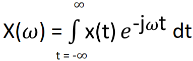
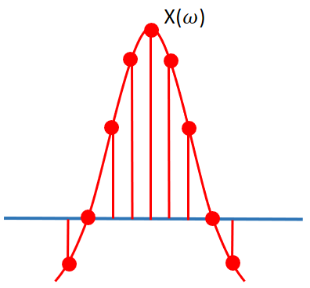
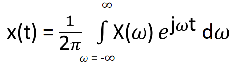
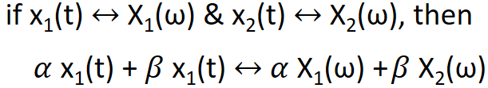
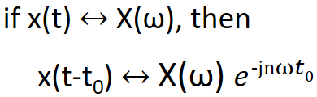
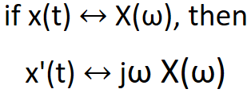
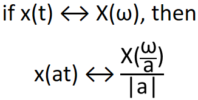
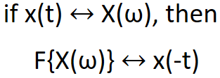

HOME BLOG EBOOKS ABOUT CONTACT SHOP
We know that the Fourier series is used to represent a periodic function by a discrete sum of complex exponentials. But how often are natural signals periodic?? Now that’s a problem. Too bad we can’t apply Fourier series to non periodic signals.
The way around this is to assume that an Aperiodic signal is a periodic signal with infinite time period. We assume that the same pattern repeats after infinite time. And the result is the Fourier transform.
The Fourier transform is used to represent a general, non periodic function by a continuous superposition or integral of complex exponentials. The Fourier transform can be viewed as the limit of the Fourier series of a function when the period approaches to infinity, so the limits of integration change from one period to (−∞,∞).
The expression for the Fourier Transform is given by:

For Periodic functions, there is a definite fixed no. of frequency components, but for Aperiodic functions, there are infinite no. of frequency components, hence X(ω) is a continuous function of ω, unlike cn which is a discrete quantity. If you try using the Fourier transform on periodic functions, you can see that the Fourier series coefficients(cn) are basically the sampled values of X(ω). In other words, X(ω) forms the envelope for the Fourier series coefficients.

To obtain the original function from its frequency distribution, i.e. go back from frequency domain to the time domain, we need to use the Inverse Fourier transform:


If we were to time shift a signal, it’s magnitude spectrum won’t change, only it’s phase spectrum changes.

Do note that the magnitude of e-jnωt0 = 1, so this term can only bring a phase shift.



For example, the Fourier transform of a square wave is a sinc function and the Fourier transform of a sinc function is a square wave.